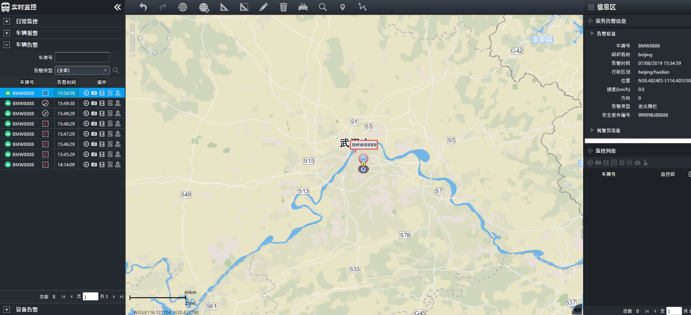

车辆告警
车辆在行使过程中，出现超速、越界、偏离路线等异常状况时，进行告警，系统可对告警车辆提供视频监控、位置监控，并记录告警信息、对告警信息进行处理等。
•
超速告警：车辆行驶过程中，超过了预设的速度，安全套件主动向监控系统报警。
•
进/出区域：用户设置电子围栏，并将电子围栏应用到车辆，当应用该电子围栏的车辆驶入或驶出电子围栏时将主动上报此告警。
•
路线偏移：用户设置车辆的行驶路线，并将行使路线应用到车辆，当车辆未按行使路线行使，即认定车辆未按预设的路线行驶，将上报路线偏移告警。
•
进出路线：用户设置车辆的行驶路线，并将行使路线应用到车辆，当车辆进出行使路线时，将上报进出路线告警。
电子围栏、行驶路线、超速规则等交通规则的设定及应用在交通管理模块实现。
在左侧导航菜单栏中选择
车辆告警
主菜单，进入车辆告警主界面，如下图所示。

Fig 44 车辆告警主界面
查询告警信息
查看告警信息
查看告警位置
处理告警
其它操作
Parent topic: 实时监控